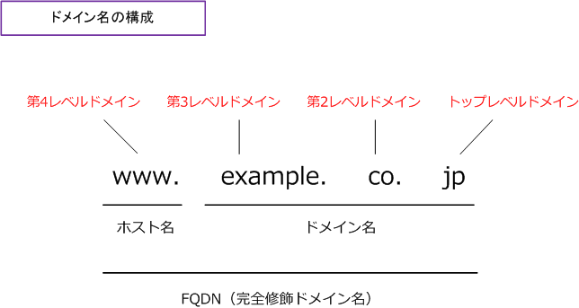
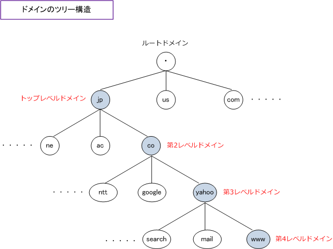
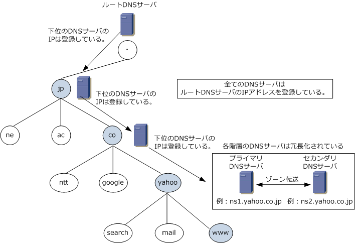
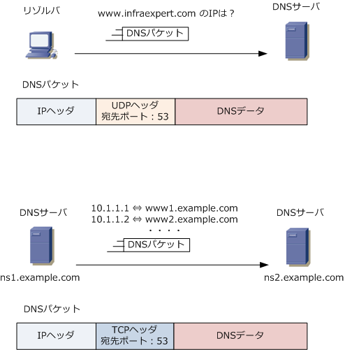

DNS
DNSとは
DNS ( Domain Name System ) は、ドメイン名（コンピュータを識別する名称）をIPアドレスに自動的に 変換してくれるアプリケーション層プロトコルです。DNSの仕組みにより、覚えにくいIPアドレスではなく ローマ字でURLを入力しWebアクセスしたり、ローマ字でメールアドレスを入力してメール送信ができます。
DNSの仕組みがないと、例えばYahooのWebサーバにアクセスするために https://www.yahoo.co.jp/ と 入力するのではなく「https://192.168.100.212」のようにIPを入力しアクセスすることが必要になります。
ドメイン名の構造
DNSはドメイン名をIPアドレスに変換してくれるのですが、先ずそのドメイン名の構造について解説します。 ドメイン名は、コンピュータを識別する名称のことです。ドメイン名はホスト名や組織名を識別するために 階層構造がとられており、英字がピリオドによりつながれています。下図の通りドメイン名の一番右側から トップレベルドメイン、第2レベルドメイン、第3レベルドメイン、第4レベルドメインと続きます。

「www」のホスト名を省略せずに指定した記述形式「www.example.co.jp」は FQDN (Fully Qualified Domain Name) といいます。
| ドメインレベル | 説明 | ドメイン名の例 |
|---|---|---|
| トップレベルドメイン ( Top Level Domain ) |
トップレベルドメイン（TLD）では、国別、地域、 商用などを表すドメインとなっている。 |
jp (日本) us (アメリカ) com (商用) |
| 第2レベルドメイン | 第2レベルドメイン(SLD)では、組織の種類を 表すドメインとなっている。ただしトップレベル ドメインによりこのポリシーは異なる。 ※1 |
co (一般企業) ac (教育機関) go (政府機関) |
| 第3レベルドメイン | 第3レベルドメインでは、具体的な企業名や 組織などを表すドメインとなっている。ただし、 トップレベルドメインによりこのポリシーは異なる。 |
yahoo (ヤフー) keio (慶応義塾) ntt (NTT) |
| 第4レベルドメイン | 第4レベルドメインは、「ホスト名」に位置づけ されるドメインです。一般的にWebサーバであれば 「www」として、FTPサーバであれば「ftp」とする。 |
- |
※1 トップレベルドメインに「com」を選んだ場合、セカンドレベルドメインは「cisco」等の組織名を表すドメイン名となります。
ドメインはツリー構造となっています。ドメインの頂点にルートドメインが存在し、ルートドメイン配下に トップレベルドメインがありその配下に第2レベルドメインと続き、下図のように階層構造となっています。

DNSの構成
DNS (Domain Name System) はDNSサーバとリゾルバにより構成されます。DNSサーバは各階層ごとに 存在します。ルートドメインに位置するルートDNSサーバは全世界で13組あります。ルートDNSサーバは、 下位のDNS（jp のDNSサーバ、com のDNSサーバ) のIPアドレスを管理しています。つまりDNSサーバは そのドメインのドメイン名とIPアドレスの対応表だけでなく下位DNSサーバのIPアドレスも管理しています。
| DNSの構成 | 役割 | 使用される機器 |
|---|---|---|
| DNSサーバ | ドメイン名とIPアドレスの対応表を保持するホスト、 またはソフトウェアのこと。各階層ごとに存在する。 |
Windowsサーバ、Linuxサーバなど |
| リゾルバ | DNSサーバに問い合わせを行うホスト、または ソフトウェアのこと。DNSクライアントとも呼ばれる。 |
Windows OSなどのパソコンなど |
各階層のDNSサーバは耐障害性を考慮して複数のDNSサーバにより構成されます。DNSサーバはゾーン情報の マスターデータを管理するプライマリDNSサーバと、バックアップとなる１台以上のセカンダリDNSサーバに よって構成されます。これらのサーバが同じ情報を共有するために、プライマリDNSサーバはセカンダリDNS サーバに定期的にゾーン情報を転送することによって同期を取っています。このことをゾーン転送といいます。
※ ゾーン情報は、あるドメインについてその中のドメイン名とIPアドレスなどが対応付けられたデータベース。 ※ ゾーン情報を管理するDNSサーバは、権威DNSサーバ（DNSコンテンツサーバ）と言います。

例えば yahoo.co.jp のDNSゾーンで、プライマリDNSサーバに ns1.yahoo.co.jp、セカンダリDNSサーバに ns2.yahoo.co.jp、ns3.yahoo.co.jp、ns4.yahoo.co.jpがあるとします。ns1.yahoo.co.jpのサーバに障害が 発生しても ns1はns2,ns3,ns4と同期を取っているので yahoo.co.jp ドメインでは問題なく名前解決されます。 ※ ゾーン転送は、セキュリティ上の観点からそのドメイン内のセカンダリDNSサーバ以外と行わないのが基本。
DNSのパケット
リゾルバがDNSサーバに行うドメイン名からのIPアドレスの名前解決にはUDP（ポート番号53）を使用します。 一方、DNSサーバとDNSサーバとがゾーン情報のファイル転送を行う場合 TCP(ポート番号53）を使用します。

※ ゾーン情報のファイル転送を行わないDNS通信でも、512バイトを超えるDNS応答を取り扱う場合はUDPではなくTCPを使用。
DNSによる名前解決の仕組み
ブラウザで「https://www.infraexpert.com/」と入力すると、PCで指定したDNSサーバに問い合わせます。 対応表がそのDNSサーバのゾーン情報になくキャッシュにもない場合、ルートDNSサーバへ問い合わせます。 同じような流れで問い合わせと通知が下図の通り行われます。しかし実際には、リゾルバやローカルのDNS サーバに一度調べた情報がキャッシュに残っているため、毎回このようなルートへの問い合わせはしません。

キャッシュDNSサーバは、ドメイン名に対する名前解決の問い合わせを受け付けて、該当するドメイン名を 管理するDNSサーバに問い合わせをしていき、最終的にWebクライアントに結果のIPアドレスを応答します。 権威DNSサーバは、ドメイン名とIPアドレスを対応づけられたゾーン情報を管理して、問い合わせに対して 自身が管理する情報のみを応答します。
← DHCPリレーエージェント HTTPとは →